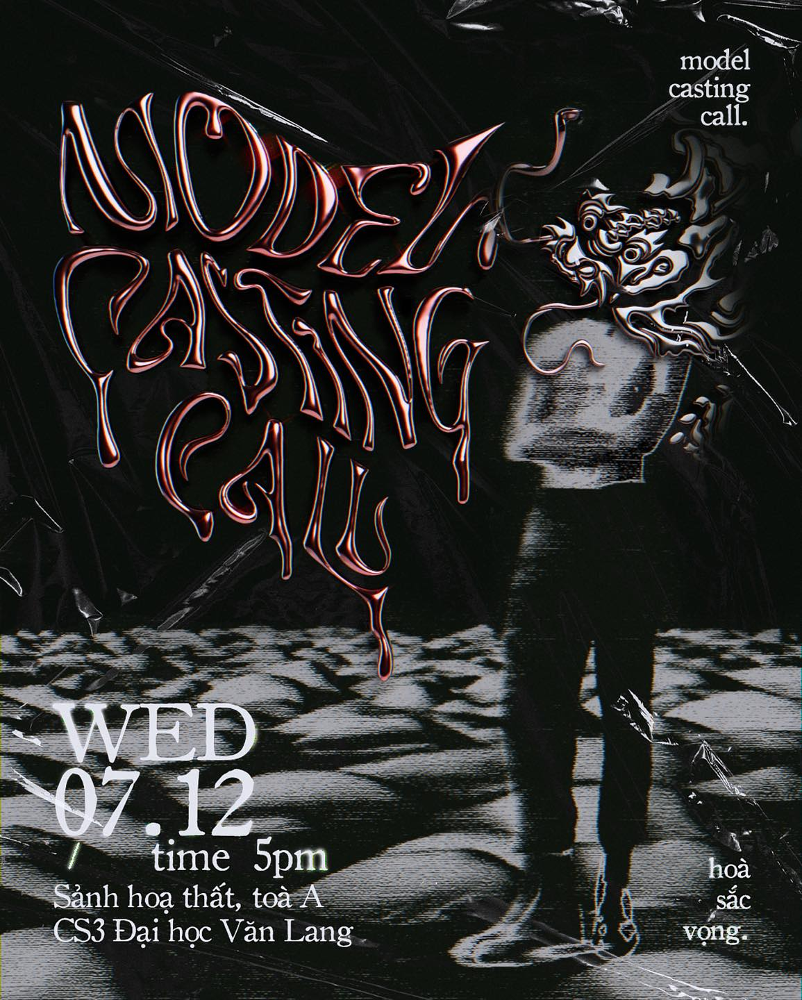

BST “Mùa hoa” của thủ khoa Thiết kế Thời trang nở rộ tại cuộc thi: 'Fashion In Paris'
BST “Mùa hoa” của thủ khoa Thiết kế Thời trang nở rộ tại cuộc thi: 'Fashion In Paris'
Cuối tháng 10/2023 vừa qua, theo thông báo từ ban tổ chức cuộc thi “Fashion in Paris” do Viện Pháp tại Tp.HCM, Bộ sưu tập “Mùa hoa” do cựu sinh viên Khóa 23 ngành Thiết kế Thời trang, Thủ khoa tốt nghiệp năm 2021 Nguyễn Nhật Nghi thực hiện, đã xuất sắc giành giải Nhì tại cuộc thi.
Nhân kỷ niệm 50 năm quan hệ ngoại giao Pháp - Việt, Viện Pháp tại Tp.HCM tổ chức cuộc thi tìm kiếm tài năng thiết kế trẻ Việt Nam “Fashion in Paris”. Xuất sắc thể hiện tinh thần hữu nghị giữa hai đất nước qua ngôn ngữ thời trang, Nguyễn Nhật Nghi - cựu sinh viên Khóa 23 Trường Đại học Văn Lang, nay là học viên chương trình đào tạo Thạc sĩ Mỹ thuật Ứng dụng đã giành giải Nhì chung cuộc với bộ sưu tập “Mùa hoa”.
Sau ngày ra trường, thủ khoa Nguyễn Nhật Nghi tiếp tục với đam mê thiết kế thời trang chuyên nghiệp, học tập chuyên sâu và thành lập thương hiệu riêng Nhat Design.
Sau ngày ra trường, thủ khoa tốt nghiệp ngành Thiết kế Thời trang năm 2021 Nguyễn Nhật Nghi tiếp tục sống hết mình với đam mê: vừa học thạc sĩ tại Trường Đại học Văn Lang với học bổng 100% học phí toàn khóa, vừa là trợ giảng của Khoa Mỹ thuật và Thiết kế, vừa phát triển thương hiệu thời trang Nhat Design của riêng mình.

Trở thành Á quân cuộc thi Fashion In Paris đã giúp Nhật Nghi có thêm động lực cho chặng đường phát triển sự nghiệp thiết kế thời trang chuyên nghiệp. Nhật Nghi cho biết, bộ sưu tập “Mùa hoa” là sự kết hợp độc đáo giữa Việt - Pháp: mang đặc trưng của áo dài tứ thân - Trang phục truyền thống nước nhà hòa quyện với hình ảnh hoa diên vĩ - Loài hoa biểu tượng của đất nước hình lục lăng.
Khoảng 70% vật liệu sử dụng trong BST “Mùa Hoa” được lấy từ trang phục tái chế và xử liệu theo nguyên tắc sống xanh Zero Waste. Bên cạnh thông điệp hữu nghị, các bộ trang phục được thực hiện với mong muốn đề cao thời trang bền vững, thân thiện với môi trường, hạn chế chất thải trong quá trình tạo ra. Đây cũng chính là đề tài, định hướng cô bạn muốn phát triển lâu dài trong sự nghiệp thiết kế tương lai.
Khoảng 70% vật liệu sử dụng trong BST “Mùa Hoa” được lấy từ trang phục tái chế và xử liệu theo nguyên tắc Zero Waste.
Thử sức tại giải thi Fashion In Paris đã mang đến cho Nhật Nghi nhiều trải nghiệm thú vị, được sống lại cảm giác hồi hộp của những ngày làm đồ án khi còn ngồi trên giảng đường đại học, trau chuốt từng đường kim mũi chỉ và thuyết trình giới thiệu tác phẩm của mình trước hội đồng giám khảo là những nhà thiết kế chuyên nghiệp, các đại diện đến từ Pháp. Nhật Nghi chia sẻ: “Điều khó khăn nhất với mình đó là việc phải cân bằng thời gian học tập, công tác tại trường và thời gian sáng tạo, hoàn thiện sản phẩm. Thật may mắn khi bên cạnh mình luôn có thầy cô, bạn bè và người thân hết lòng hỗ trợ.”
Sự hòa trộn giữa nét đẹp trong văn hóa Việt - Pháp cùng việc ứng dụng thời trang bền vững đã giúp cựu sinh viên Văn Lang thuyết phục Ban giám khảo thành công.
Với tâm thế của thế hệ đi trước cùng chia sẻ hành trình đã qua với đàn em, Nhật Nghi nhắn nhủ: “
Mình mong các bạn sinh viên sẽ luôn kiên trì, chăm chỉ học tập. Mỗi kiến thức được thầy cô truyền đạt trong giờ học đều sẽ giúp ích cho chúng ta khi bước vào môi trường thực tế.
”
Thành quả của Nhật Nghi tại "Fashion in Paris" một lần nữa đã khẳng định thương hiệu của Trường Đại học Văn Lang trong đào tạo lĩnh vực thiết kế mỹ thuật nói chung và ngành Thiết kế Thời Trang nói riêng. Dựa trên nền tảng vững mạnh này, tháng 4/2023 vừa qua, Nhà trường đã công bố tuyển sinh chuyên ngành Xây dựng Thương hiệu và Quản trị Thời trang (Fashion Branding & Management) - hướng đi chuyên sâu của ngành Thiết kế Thời trang nhằm đáp ứng nhu cầu đào tạo nhà quản trị, sáng tạo trong lĩnh vực thời trang.
Tin: Phương Trinh
Hình ảnh: Nhân vật cung cấp
Tin tức gần đây

30/9/3023
Fashion Textile Showcase 2023
1/10/3023
Miss Charm 2023 tham sự show thời trang tốt nghiệp K25TT
30/9/3023
Xem tin tức khác
Sự kiện gần đây

Ngành thời trang tuyển thực tập sinh cho thời kì mùa xuân
1/11/3023

Casting Model
3/11/3023
Ha Giang of Van Lang University
30/9/3023
Xem sự kiện khác